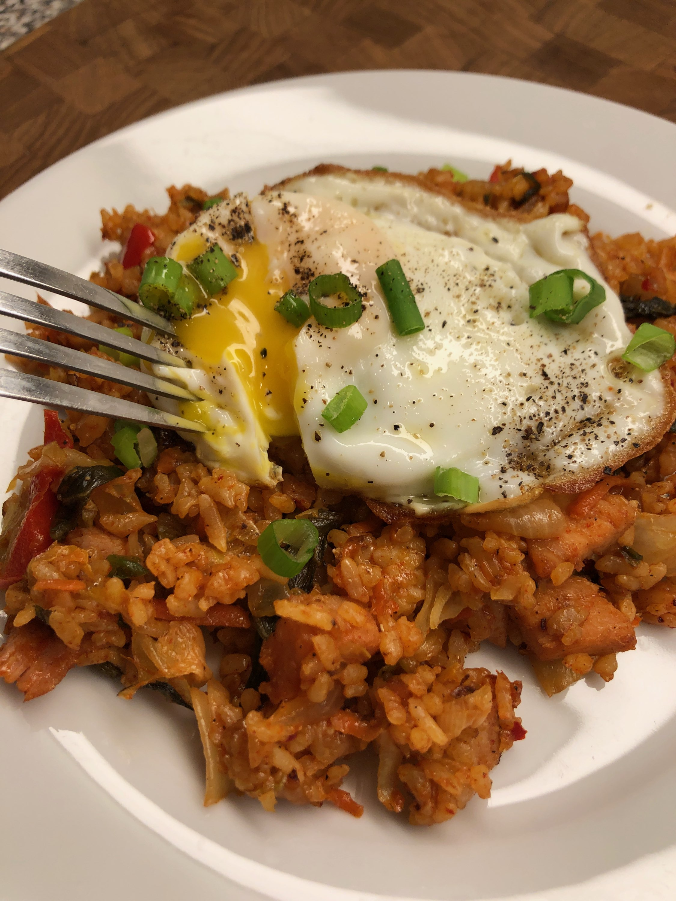

Kimchi Fried Rice

Description
This kimchi fried rice recipe is by Diana71.
This is a very basic kimchi fried rice, a humble dish made with leftover rice, kimchi, and usually a processed meat like Spam®. In this recipe I used cubed ham and veggies I had in the fridge. Serve with a sunny side up egg over top if you like.
Ingredients
- 1 tablespoon butter
- 1 tablespoon olive oil
- 3 drops sesame oil, or to taste
- 1/4 cup diced onion
- 1/4 cup shredded carrots
- 2 scallions, white and light green parts, sliced
- 1/2 cup cubed, fully cooked ham
- 1/3 cup chopped kimchi
- 1 teaspoon garlic powder
- 2 cups cooked rice
- 1 tablespoon soy sauce
- 1 tablespoon gochujang (Korean chile paste)
- salt and ground black pepper to taste
Steps
- Warm butter and olive oil together over medium-high heat in a large skillet or wok. Add in sesame oil. Add onion, carrots, and scallions and cook until onion is translucent, about 2 minutes. Mix in cubed ham and kimchi; cook for 1 more minute. Season with garlic powder.
- Stir in rice and cook until mixture is heated throughout. Drizzle soy sauce over top and mix in gochujang. Stir until well combined and adjust seasoning with salt and pepper.